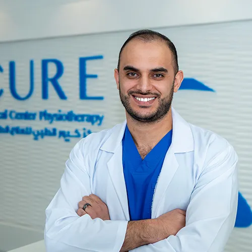
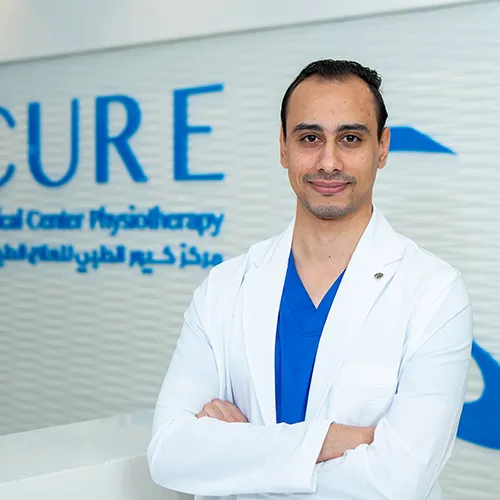
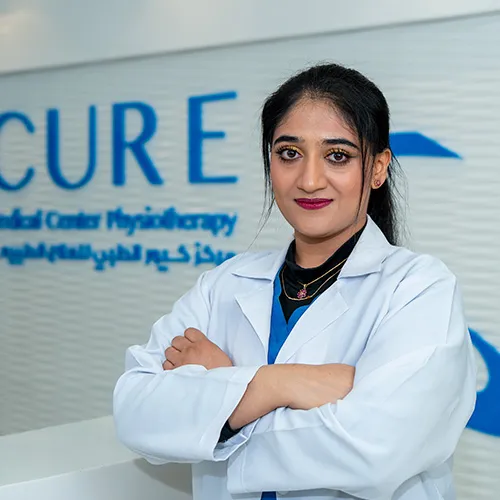
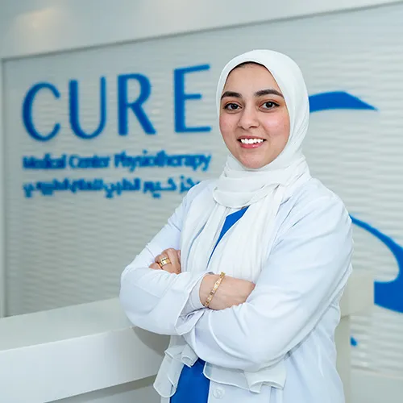
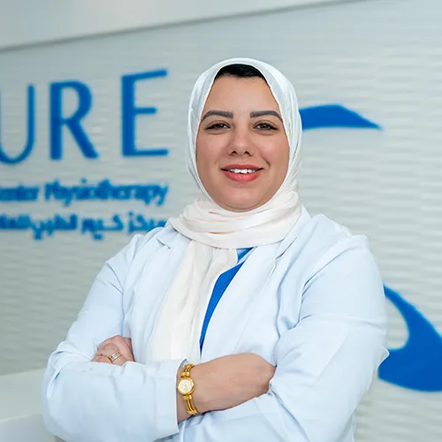

الاستقبال
أحضر الهوية الإماراتية وبطاقة التأمين، والتحويل الطبي إن وُجد. تعبّئ استمارة تسجيل قصيرة. متوسط الانتظار حوالي 15 دقيقة.

مركز كيور الطبي للعلاج الطبيعي في الطابق الثاني من برج أساس، شارع كورنيش الخان. كل مريض يبدأ بتقييم شامل، ثم نضع له خطة علاج خاصة بحالته.
ابدأ من مكان الألم. افتح السطر لترى ما نستخدمه في العلاج، ومن من أخصائيينا يتابع هذه الحالات أكثر.
الانزلاق الغضروفي، انضغاط الأعصاب، عرق النسا، آلام الرقبة وأسفل الظهر، الجنف.
ما نستخدمه: الشد الآلي، ليزر MLS الروبوتي، التحفيز المغناطيسي الوظيفي (Tesla 2.5)، والعلاج اليدوي.
يتابعها أكثر: محمد حامد، كريمة مصطفى، طيف أيمن، محمد جمال.
الكتف المتجمد، الانحشار، إصابات الكفة المدورة، تكلس أوتار الكتف.
ما نستخدمه: الموجات التصادمية، وجهاز Kinetec Centura للحركة السلبية المستمرة بعد إصلاح الكفة المدورة أو تبديل مفصل الكتف.
يتابعها أكثر: محمود مصباح، محمد حامد، كريمة مصطفى.
تبديل مفصل الركبة أو الورك، الرباط الصليبي والغضروف الهلالي، ركبة القافز، ركبة العدّاء، خشونة المفاصل.
ما نستخدمه: جهاز Kinetec Spectra Kompanion للركبة، الموجات التصادمية، ونظام HOMING للحركة والتوازن.
يتابعها أكثر: محمد جمال، محمود مصباح، نينا تشودري.
التهاب اللفافة الأخمصية، شوكة الكعب، التهاب وتر أخيل، التواء الكاحل.
ما نستخدمه: الموجات التصادمية والإبر الليزرية.
يتابعها أكثر: طيف أيمن، كريمة مصطفى، محمد جمال.
مرفق التنس، مرفق لاعب الغولف، متلازمة النفق الرسغي.
ما نستخدمه: الموجات التصادمية، الإبر الليزرية، العلاج بالتبريد والموجات فوق الصوتية.
استعادة الحركة بعد عمليات الركبة أو الورك أو الكتف أو الكاحل، أو إعادة بناء الأربطة، أو بعد الكسور.
ما نستخدمه: أجهزة الحركة السلبية المستمرة، التبريد مع الموجات فوق الصوتية، نظام HOMING، وصالة التأهيل.
الجلطة الدماغية، الشلل النصفي، شلل الوجه (بيل)، إصابات الحبل الشوكي، مشاكل الأعصاب الطرفية، التوازن والمشي.
ما نستخدمه: التحفيز المغناطيسي الوظيفي، نظام HOMING، والحركة السلبية المستمرة.
يتابعها أكثر: كريمة مصطفى، نينا تشودري، طيف أيمن.
شد العضلات، التواء الأربطة، إصابات الإجهاد المتكرر، آلام الساق الأمامية.
ما نستخدمه: التبريد مع الموجات فوق الصوتية، الموجات التصادمية، الإبر الليزرية.
يتابعها أكثر: محمود مصباح (دبلوم FIFA في الطب الرياضي).
التهاب المفاصل، هشاشة العظام، باركنسون، التوازن وخطر السقوط.
ما نستخدمه: برنامج تأهيل كبار السن، وفحص خطر السقوط على نظام HOMING.
تأهيل الأطفال من الحالات العصبية العضلية والعضلية الهيكلية، ومنها الشلل الدماغي والقدم الحنفاء وضعف التوتر العضلي.
يتابعها أكثر: نينا تشودري.
أحضر الهوية الإماراتية وبطاقة التأمين، والتحويل الطبي إن وُجد. تعبّئ استمارة تسجيل قصيرة. متوسط الانتظار حوالي 15 دقيقة.
يسألك الأخصائي عن تاريخك الصحي وروتينك اليومي وما يزيد الألم أو يخففه، ثم يفحص وضعية الجسم والقوة والمرونة وطريقة الحركة.
نخبرك بما وجدناه وسببه بكلام واضح. اسأل في أي وقت، ففهمك لحالتك جزء من العلاج.

خطة مبنية على تقييمك: علاج يدوي، والأجهزة المناسبة لحالتك، وتمارين في صالة التأهيل.
MLS Robotic LaserLaser NeedleShockwaveTesla 2.5 Magnetic StimulationKinetec CenturaKinetec Spectra KompanionCryoultrasoundHOMINGBTL HandsFree SonoSonopulsTractionCompression therapy
الأجهزة الموجودة في غرف العلاج لدينا. ماذا يفعل كل جهاز
ستة منهم يحملون شهادات إضافية في العلاج اليدوي.

10 سنوات خبرة · جامعة القاهرة · شهادة العلاج اليدوي لتقويم العظام (OMTA)

أكثر من 9 سنوات · التأهيل اليدوي للعمود الفقري والعظام

أكثر من 7 سنوات · دبلوم FIFA في الطب الرياضي · معالج يدوي معتمد (المملكة المتحدة)

6 سنوات · ممارس معتمد للعلاج اليدوي

5 سنوات · ماجستير العلاج الطبيعي · التشريط العلاجي

أكثر من 4 سنوات · العلاج اليدوي لتقويم العظام

أخصائي علاج طبيعي

أخصائية علاج طبيعي
أخصائي علاج طبيعي
أحضر بطاقة التأمين والهوية الإماراتية. إذا كانت وثيقتك تتطلب تحويلاً، تستطيع شركة التأمين إرساله إلينا بالبريد الإلكتروني قبل زيارتك.
بدون تأمين؟ ادفع نقداً أو بالبطاقة، ونعطيك الإيصال وتقريراً طبياً بالإنجليزية لتسترد المبلغ.
4.9/5
“Had a great experience with Dr. Mohamed Hamed. He was professional and clear, and really understanding with chronic neck and upper back pain.”
“Excellent service with proper machinery & professional qualified physiotherapists. Dr. Syed has treated really well in each and every session. Clean environment.”
“The clinic is very clean and well organized, the reception staff are welcoming and efficient, and the management is professional and attentive.”
برج أساس، مدخل المكاتب، الطابق الثاني، مكتب 202، شارع كورنيش الخان، الشارقة
مقابل البريج. ص.ب 22370.
المواقف: مواقف مجانية أمام المبنى وحوله، ومواقف خاصة خلف المبنى، وتذكرة الموقف من الاستقبال.
سهولة الوصول: منحدرات عند المدخل لتسهيل الدخول.
| السبت | 9 ص – 9 م |
| الأحد | 9 ص – 9 م |
| الاثنين | 9 ص – 9 م |
| الثلاثاء | 9 ص – 9 م |
| الأربعاء | 9 ص – 9 م |
| الخميس | 9 ص – 9 م |
| الجمعة | مغلق |